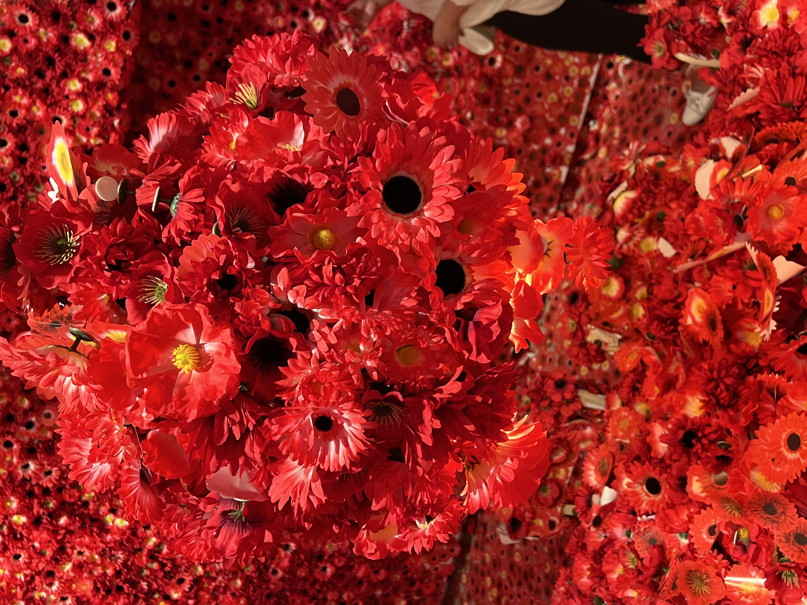

This week, I visited the art exhibition of YAYOI KUSAMA. KUSAMA is a Japanese contemporary artist whose works show the exploration of infinite space and the expression of personal psychological state.
The frequently appearing elements are wave dots and bright colors. I was particularly interested in the art installation Flower Obsession, a stage apartment where people were invited to put red flowers all over the room. In this space, the line of sight is repeated bright flowers, as if the whole world is full of red flowers, and I am submerged in the sea of flowers. I was inspired by Kusama's work and started to develop my web page based on flowers.